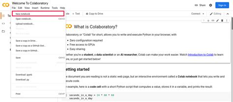
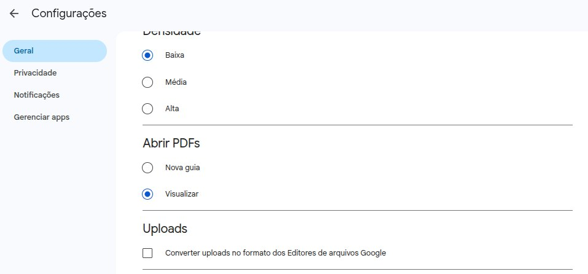

2.3.3Introdução à Análise de Dados com Python — Primeiros passos com o pacote Pandas
Análise de dados tabulares
Alisson Soares
Curso de especialização em:
Ciências Sociais de Dados: Aplicações de Métodos Quantitativos à Análise Social e à Avaliação de Políticas Públicas
Módulo: 04 – Introdução à Análise de Dados com Python
Docente: Prof. Dr. Alisson Soares
Aula por: Alisson Soares
Plano da aula
- Importação e exportação de dados (CSV, Excel, JSON e formatos comuns)
- A biblioteca pandas: Series e DataFrame
- Operações básicas de seleção, filtragem e transformação
- Resumo estatístico, agrupamento e um primeiro gráfico
- Method chaining (encadeamento de métodos): abertura com o conceito geral em Python (strings) e, na Parte 6, no pandas —
assign, callables epipe
Parte 1 — O que é o pandas?
O que é o pandas?
-Os dados tabulares são o coração da Ciência Social de Dados. - Planilhas (Excel/Sheets), CSV da PNAD/IBGE, tabelas de bases administrativas…
“O pandas será uma ferramenta principal de interesse em boa parte do restante do livro. Ele contém estruturas de dados e ferramentas para manipulação de dados, projetadas para agilizar e facilitar a limpeza e a análise de dados em Python.” (McKinney, 2017, p. 185)
Por que o pandas resolve o problema?
“… a principal diferença é que o pandas foi projetado para trabalhar com dados tabulares e heterogêneos. O NumPy, em comparação, é mais apropriado para trabalhar com dados numéricos homogêneos em arrays.” (McKinney, 2017, p. 185)
- pandas: colunas com tipos diferentes (texto, número, data…) numa mesma tabela.
O nome “pandas”
“O próprio nome pandas é derivado de panel data (dados em painel), um termo de econometria para conjuntos de dados multidimensionais estruturados, e uma brincadeira com a própria expressão Python data analysis.” (McKinney, 2017, p. 30)
Instalação e importação
Dica
No Google Colab o pandas já vem instalado.
Em ambiente local (no seu computador pessoal), caso já tenha Python instalado, para instalá-lo: pip install pandas
Parte 2 — Entrada e saída de dados (I/O)
Lendo dados de arquivos
O pandas lê dados de diferentes formatos: CSV, Excel, JSON, HTML, SQL…
Escrevendo dados
Feitas as alterações nos dados, para salvá-los alterados no disco, use:
Na prática: base de municípios {visibility=“hidden”}`
gravado: True| municipio | uf | pop_2021 | idh_2010 | |
|---|---|---|---|---|
| 0 | Recife | PE | 1 657 878 | 0.755 |
| 1 | Olinda | PE | 414 735 | 0.715 |
| 2 | Jaboatão | PE | 721 739 | 0.716 |
| 3 | Caruaru | PE | 365 212 | 0.681 |
| 4 | Petrolina | PE | 356 762 | 0.719 |
| 5 | Natal | RN | 899 578 | 0.763 |
| 6 | Mossoró | RN | 300 618 | 0.709 |
Na prática - dados da internet
Diversos órgãos públicos disponibilizam bases de dados em suas páginas de “Dados Abertos”. Jogue em buscadores como Google, Bing ou Duckduckgo “dados abertos” e o nome da organização “prefeitura de”, “governo do estado de”. Encontre a base de dados desejada.
Aviso
Baixar os dados pela URL apenas funcionará se a URL (o endereço de internet) seja a do o arquivo: isto é, deve começar com http e deve terminar com a extensão do arquivo: .csv, xlsx, json. Geralmente os dados pũblicos são disponibilizados em formatos como json e csv.
Exemplos de base de dados públicas
Ex.: Dados vacinação em Recife:
- https://dados.recife.pe.gov.br/dataset/perfil-das-pessoas-vacinadas-covid-19/resource/da596cdc-a53f-4484-9856-14f0c06432e2
- URL de tabela csv https://dados.recife.pe.gov.br/dataset/71685aa9-d10f-46e0-9e5b-47c33b24644a/resource/da596cdc-a53f-4484-9856-14f0c06432e2/download/2022-perfil-das-pessoas-vacinadas-covid-19.csv
Exemplos de base de dados públicas
Ex.: Dados população de rua em Belo Horizonte:
Baixando a base de dados e carregando no ambiente Python
Utilizando o comando Linux wget para baixar os dados de sua URL terminada em .csv”: wget -O <novo-nome-do-arquivo.csv> <URL da base de dados>.
wgetcomando para fazer o download de dados da internet.-Oindica que passaremos o “output”, que no caso quer dizer que o próximo campo será o nome do arquivo.<novo-nome-do-arquivo.csv>o nome que queremos para o arquivo a ser baixado. Pode incluir também o diretório/pasta/ficheiro destino antes do nome. Por exemplo, se quero salvar o arquivo com o nome “vacinas_recife” dentro do diretóriomeus_dados, o comando fica, por enquanto,wget -O meus_dados/vacinas_recife.csv.<URL da base de dados>. A URL, o endereço de internet do arquivo. Ele deve obrigatoriamente terminar com o formato do arquivo, comocsv,json,xlsx. Vejamos o exemplo abaixo:
Conferindo se o arquivo foi baixado
Comandos Linux para conferir se o arquivo foi baixado com sucesso:
catimprime na tela o arquivo completo|pipe do Linux, liga o output do comando anterior (cat, no caso), a um novo comando (head).headmostra apenas as primeiras linhas do arquivo-n 3: parâmetro do comando head: numero de linhas a serem impressas na telawc -l“word count lines”. No caso, conta quantas linhas há no arquivo
"faixa_etaria";"idade";"sexo";"raca_cor";"municipio";"grupo";"categoria";"lote";"vacina_fabricante";"descricao_dose";"cnes";"sistema_origem";"data_vacinacao"
"35 a 39 anos";"36";"FEMININO";"PARDA";"RECIFE";"TRABALHADORES DA SAÚDE";"";"FM2951";"3 - COMIRNATY (PFIZER)";"3";"DS 1: CNES: 000507 - POLICLÍNICA GOUVEIA DE BARROS";"Conecta Recife";"2022-01-24 00:00:00.0"
"35 a 39 anos";"37";"MASCULINO";"BRANCA";"RECIFE";"PESSOAS COM COMORBIDADES";"PESSOAS COM OBESIDADE MÓRBIDA (IMC > OU = 40)";"FK8911";"3 - COMIRNATY (PFIZER)";"3";"DS 5: CNES: 000701 - MATERNIDADE BANDEIRA FILHO";"Conecta Recife";"2022-01-11 00:00:00.0"
"faixa_etaria";"idade";"sexo";"raca_cor";"municipio";"grupo";"categoria";"lote";"vacina_fabricante";"descricao_dose";"cnes";"sistema_origem";"data_vacinacao"
"35 a 39 anos";"36";"FEMININO";"PARDA";"RECIFE";"TRABALHADORES DA SAÚDE";"";"FM2951";"3 - COMIRNATY (PFIZER)";"3";"DS 1: CNES: 000507 - POLICLÍNICA GOUVEIA DE BARROS";"Conecta Recife";"2022-01-24 00:00:00.0"
"35 a 39 anos";"37";"MASCULINO";"BRANCA";"RECIFE";"PESSOAS COM COMORBIDADES";"PESSOAS COM OBESIDADE MÓRBIDA (IMC > OU = 40)";"FK8911";"3 - COMIRNATY (PFIZER)";"3";"DS 5: CNES: 000701 - MATERNIDADE BANDEIRA FILHO";"Conecta Recife";"2022-01-11 00:00:00.0"
cat: erro de escrita: Pipe quebrado| faixa_etaria | idade | sexo | raca_cor | municipio | grupo | categoria | lote | vacina_fabricante | descricao_dose | cnes | sistema_origem | data_vacinacao | |
|---|---|---|---|---|---|---|---|---|---|---|---|---|---|
| 0 | 35 a 39 anos | 36.0 | FEMININO | PARDA | RECIFE | TRABALHADORES DA SAÚDE | NaN | FM2951 | 3 - COMIRNATY (PFIZER) | 3 | DS 1: CNES: 000507 - POLICLÍNICA GOUVEIA DE BA... | Conecta Recife | 2022-01-24 00:00:00.0 |
| 1 | 35 a 39 anos | 37.0 | MASCULINO | BRANCA | RECIFE | PESSOAS COM COMORBIDADES | PESSOAS COM OBESIDADE MÓRBIDA (IMC > OU = 40) | FK8911 | 3 - COMIRNATY (PFIZER) | 3 | DS 5: CNES: 000701 - MATERNIDADE BANDEIRA FILHO | Conecta Recife | 2022-01-11 00:00:00.0 |
| 2 | 20 a 24 anos | 20.0 | MASCULINO | BRANCA | RECIFE | PÚBLICO EM GERAL (18 a 59 anos) | NaN | FL4222 | 3 - COMIRNATY (PFIZER) | 3 | DS 5: CNES: 000701 - MATERNIDADE BANDEIRA FILHO | Conecta Recife | 2022-01-08 00:00:00.0 |
| 3 | 35 a 39 anos | 38.0 | MASCULINO | PARDA | RECIFE | PÚBLICO EM GERAL (18 a 59 anos) | NaN | 219VCD273Z | 2 - CHADOX1NCOV-19 - OXFORD/ASTRAZENECA (FIOCRUZ) | 3 | DS 2: CNES: 6897029 - POLICLÍNICA SALOMÃO KELNER | Conecta Recife | 2022-02-18 00:00:00.0 |
| 4 | 25 a 29 anos | 26.0 | FEMININO | BRANCA | RECIFE | PÚBLICO EM GERAL (18 a 59 anos) | NaN | FM2967 | 3 - COMIRNATY (PFIZER) | 3 | DS 7: CNES: 0000647 - POLICLINICA CLEMENTINO F... | Conecta Recife | 2022-02-01 00:00:00.0 |
| ... | ... | ... | ... | ... | ... | ... | ... | ... | ... | ... | ... | ... | ... |
| 1466343 | 35 a 39 anos | 36.0 | MASCULINO | PARDA | RECIFE | PÚBLICO EM GERAL (18 a 59 anos) | NaN | 219VCD288Z | 2 - CHADOX1NCOV-19 - OXFORD/ASTRAZENECA (FIOCRUZ) | 3 | DS 3: CNES: 000612 - POLICLÍNICA ALBERT SABIN | Conecta Recife | 2022-02-23 00:00:00.0 |
| 1466344 | 35 a 39 anos | 38.0 | MASCULINO | PRETA | RECIFE | PÚBLICO EM GERAL (18 a 59 anos) | NaN | 21OVCD301W | 2 - CHADOX1NCOV-19 - OXFORD/ASTRAZENECA (FIOCRUZ) | 3 | DS 7: CNES: 0000647 - POLICLINICA CLEMENTINO F... | Conecta Recife | 2022-03-24 00:00:00.0 |
| 1466345 | 35 a 39 anos | 38.0 | FEMININO | BRANCA | RECIFE | PÚBLICO EM GERAL (18 a 59 anos) | NaN | 205F21A | 4 - JANSSEN COVID-19 VACCINE (JOHNSON & JOHNSON) | 2 | DS 6: CNES: 0001392 - MIGUEL DE LIMA VALVERDE. | Conecta Recife | 2022-02-27 00:00:00.0 |
| 1466346 | 50 a 54 anos | 50.0 | MASCULINO | PARDA | JABOATÃO DOS GUARARAPES | PÚBLICO EM GERAL (18 a 59 anos) | OUTROS | 21PVCD362W | 2 - CHADOX1NCOV-19 - OXFORD/ASTRAZENECA (FIOCRUZ) | 3 | DS 6: CNES: 0001392 - MIGUEL DE LIMA VALVERDE. | Conecta Recife | 2022-07-23 00:00:00.0 |
| 1466347 | 55 a 59 anos | 55.0 | MASCULINO | AMARELA | RECIFE | PÚBLICO EM GERAL (18 a 59 anos) | OUTROS | 211J21A | 4 - JANSSEN COVID-19 VACCINE (JOHNSON & JOHNSON) | 3 | DS 1: CNES: 000507 - POLICLÍNICA GOUVEIA DE BA... | Conecta Recife | 2022-06-20 00:00:00.0 |
1466348 rows × 13 columns
É possível baixar os dados diretos da internet. Porém, deverá saber exatamente o formato e configurações do arquivo a ser baixado.
Conectado Google Drive e Google Colab

1) Config no google drive
- Acesse drive.google.com e faça login.
- Clique no ícone de engrenagem ⚙️ no canto superior direito e selecione “Configurações”.
- Na página de configurações, encontre a opção “Converter uploads para o formato dos editores de arquivos do Google” (ou “Converter arquivos carregados para o formato do Google Docs”).
- Desmarque esta opção.

nao converter arquivo
Clique em “Concluir” para salvar.
2) Criar um novo diretório/pasta/ficheiro
Pela interface web:
- Acesse drive.google.com
- Clique em “+ Novo” → “Pasta” (ou “Nova pasta”) para criar um diretório
- O nosso vamos chamar
fundaj_pandas, mas você pode dar o nome que quiser.
3) Subir arquivo (upload) no Google Drive
Escolha os arquivos .csv xlsx e faça o upload para o diretório que acabou de criar.
4) Conectando Drive ao Colab
Rode a célula acima.
Abrirá uma janela perguntando se você permite o acesso:
Clique em “Conectar ao Google Drive” (ou “Permitir”).
Outra janela se abrirá. Escolha a conta Google desejada
Revise as permissões e clique em “Permitir”
Verificando o acesso
Se surgir a pasta drive no seu Colab, então a o Google Drive foi conectado com sucesso ao Colab. Nesta pasta está todo seu Google Drive.
Observações importantes:
- A conexão é temporária: sempre que reiniciar o ambiente do Colab, será necessário montar o Drive novamente.
- O Google Drive tem cota de armazenamento (15 GB gratuitos, compartilhados com Gmail e Fotos).
- Desmonte o Drive após o uso: quando terminar de usar, você pode desconectar manualmente o Drive para interromper o acesso. Ou simplesmente encerre a sessão do Colab, e a montagem será invalidada automaticamente.
Parte 3 — As duas estruturas: Series e DataFrame
No Pandas há dois tipos de estrutura de dados: series e dataframes.
- Series é unidimensional, só possui uma diemnsão.
- Dataframes são tabelas, com duas dimensões. As colunas dos dataframes são series.
Series
- Coluna 1: o índice (0, 1, 2…); coluna 2: os valores.
Series com rótulos
Series a partir de dicionário
Comparação: Series e outros tipos de estrutura de dados
É como um dicionário ordenado ou um array rotulado
Semelhanças com listas
- É uma sequência ordenada de valores
- Suporta indexação (
s[0]) e fatiamento (s[1:3]) - Suporta iteração (for x in s)
- Tem len()
Diferenças principais entre listas e series do Pandas
Índice rotulado (não apenas posicional)
np.int64(20)Operações são vetorizadas (rápidas, em C/NumPy):
Apenas para efitos de comparacao, em Python tradicional, sem usar Pandas, utilizando lista ao invés de serie, ficaria assim a multiplicação:
[10, 20, 30, 10, 20, 30]Iterando nos itens da lista, isto ẽ, aplicando a multiplicação a todos os elementos da lista números:
Alinhamento automático em operações
Outra vantagem do series é que alinha a operação pelo index. Assim se você tem diferentes series (e, por consequência, dataframes também) que possuem nomes/chaves, ele fará a operação assegurando que aplica aos mesmos indivíduos.
DataFrame
“Um DataFrame representa uma tabela de dados retangular e contém uma coleção ordenada de colunas, em que cada uma pode ter um tipo de valor diferente (numérico, string, booleano etc.). O DataFrame tem índice tanto para linha quanto para coluna; pode ser imaginado como um dicionário de Series, todos compartilhando o mesmo índice.” (McKinney, 2017, p. 192)
Criando um DataFrame
Criando datarame a partir de um objeto tipo dicionário:
dict frutas quantidade preco
0 Manga 40 80
1 Maçã 20 100
2 Banana 25 50
3 Laranja 10 70| frutas | quantidade | preco | |
|---|---|---|---|
| 0 | Manga | 40 | 80 |
| 1 | Maçã | 20 | 100 |
| 2 | Banana | 25 | 50 |
| 3 | Laranja | 10 | 70 |
Observando o tipo:
Inspecionando o DataFrame
array([['Manga', 40, 80],
['Maçã', 20, 100],
['Banana', 25, 50],
['Laranja', 10, 70]], dtype=object)<class 'pandas.core.frame.DataFrame'>
RangeIndex: 4 entries, 0 to 3
Data columns (total 3 columns):
# Column Non-Null Count Dtype
--- ------ -------------- -----
0 frutas 4 non-null object
1 quantidade 4 non-null int64
2 preco 4 non-null int64
dtypes: int64(2), object(1)
memory usage: 228.0+ bytesParte 4 — Examinando os dados
Primeiras e últimas linhas
Dica
Na prática: head() é uma das primeiras coisas a rodar após qualquer read_csv.
Parte 5 — Seleção e filtragem
Seleção de colunas
0 Manga
1 Maçã
2 Banana
3 Laranja
Name: frutas, dtype: object| frutas | preco | |
|---|---|---|
| 0 | Manga | 80 |
| 1 | Maçã | 100 |
| 2 | Banana | 50 |
| 3 | Laranja | 70 |
loc: seleção por rótulo
| frutas | quantidade | preco | |
|---|---|---|---|
| 0 | Manga | 40 | 80 |
| 1 | Maçã | 20 | 100 |
| 2 | Banana | 25 | 50 |
| 3 | Laranja | 10 | 70 |
iloc: seleção por posição
| frutas | quantidade | preco | |
|---|---|---|---|
| 2 | Banana | 25 | 50 |
| 3 | Laranja | 10 | 70 |
| frutas | preco | |
|---|---|---|
| 0 | Manga | 80 |
| 1 | Maçã | 100 |
| 2 | Banana | 50 |
| 3 | Laranja | 70 |
Aviso
Diferença importante: com loc, o limite final é incluído (‘frutas’:‘preco’ inclui preco); com iloc (fatias), o limite final não é incluído.
Top-N / Bottom-N por uma coluna
Filtro com máscara booleana
| frutas | quantidade | preco | |
|---|---|---|---|
| 0 | Manga | 40 | 80 |
| 1 | Maçã | 20 | 100 |
| 3 | Laranja | 10 | 70 |
| frutas | preco | |
|---|---|---|
| 0 | Manga | 80 |
| 1 | Maçã | 100 |
| 3 | Laranja | 70 |
Filtragem com query
| frutas | quantidade | preco | |
|---|---|---|---|
| 0 | Manga | 40 | 80 |
| 1 | Maçã | 20 | 100 |
where
O where() é um método que mantém os valores onde a condição é True e substitui onde é False (por padrão, por NaN). É o “filtro que preserva a forma” — diferente do query/loc, que remove linhas. Where preserva o número de linhas.
0 80.0
1 100.0
2 NaN
3 70.0
Name: preco, dtype: float64Dica
query recebe uma string de expressão — leitura mais próxima da linguagem natural.
Parte 6 — Transformações básicas
Novas colunas
| municipio | uf | pop_2021 | idh_2010 | |
|---|---|---|---|---|
| 0 | Recife | PE | 1 657 878 | 0.755 |
| 1 | Olinda | PE | 414 735 | 0.715 |
| 2 | Jaboatão | PE | 721 739 | 0.716 |
| 3 | Caruaru | PE | 365 212 | 0.681 |
| 4 | Petrolina | PE | 356 762 | 0.719 |
| 5 | Natal | RN | 899 578 | 0.763 |
| 6 | Mossoró | RN | 300 618 | 0.709 |
Tipos e conversões
Aviso
astype('float') falha se houver texto não numérico na coluna. Para “forçar”, use pd.to_numeric(col, errors='coerce'), que transforma o que não converte em NaN.
Ordenando
Renomeando e descartando
Nota
Por padrão, esses métodos devolvem uma cópia. Para modificar o objeto original use inplace=True, ou (preferível hoje em dia) reatribua: df = df.rename(...).
filtrar linhas com variavel
'3 - COMIRNATY (PFIZER)'| faixa_etaria | idade | sexo | raca_cor | municipio | grupo | categoria | lote | vacina_fabricante | descricao_dose | cnes | sistema_origem | data_vacinacao | |
|---|---|---|---|---|---|---|---|---|---|---|---|---|---|
| 0 | 35 a 39 anos | 36.0 | FEMININO | PARDA | RECIFE | TRABALHADORES DA SAÚDE | NaN | FM2951 | 3 - COMIRNATY (PFIZER) | 3 | DS 1: CNES: 000507 - POLICLÍNICA GOUVEIA DE BA... | Conecta Recife | 2022-01-24 00:00:00.0 |
| 1 | 35 a 39 anos | 37.0 | MASCULINO | BRANCA | RECIFE | PESSOAS COM COMORBIDADES | PESSOAS COM OBESIDADE MÓRBIDA (IMC > OU = 40) | FK8911 | 3 - COMIRNATY (PFIZER) | 3 | DS 5: CNES: 000701 - MATERNIDADE BANDEIRA FILHO | Conecta Recife | 2022-01-11 00:00:00.0 |
| 2 | 20 a 24 anos | 20.0 | MASCULINO | BRANCA | RECIFE | PÚBLICO EM GERAL (18 a 59 anos) | NaN | FL4222 | 3 - COMIRNATY (PFIZER) | 3 | DS 5: CNES: 000701 - MATERNIDADE BANDEIRA FILHO | Conecta Recife | 2022-01-08 00:00:00.0 |
| 4 | 25 a 29 anos | 26.0 | FEMININO | BRANCA | RECIFE | PÚBLICO EM GERAL (18 a 59 anos) | NaN | FM2967 | 3 - COMIRNATY (PFIZER) | 3 | DS 7: CNES: 0000647 - POLICLINICA CLEMENTINO F... | Conecta Recife | 2022-02-01 00:00:00.0 |
| 5 | 30 a 34 anos | 31.0 | FEMININO | PARDA | RECIFE | PÚBLICO EM GERAL (18 a 59 anos) | NaN | FM2967 | 3 - COMIRNATY (PFIZER) | 3 | DS 6: CNES: 0001392 - MIGUEL DE LIMA VALVERDE. | Conecta Recife | 2022-02-02 00:00:00.0 |
| ... | ... | ... | ... | ... | ... | ... | ... | ... | ... | ... | ... | ... | ... |
| 1466336 | 35 a 39 anos | 35.0 | MASCULINO | PARDA | RECIFE | PÚBLICO EM GERAL (18 a 59 anos) | OUTRAS | FM2951 | 3 - COMIRNATY (PFIZER) | 3 | DS 5: CNES: 000701 - MATERNIDADE BANDEIRA FILHO | Conecta Recife | 2022-01-18 00:00:00.0 |
| 1466337 | 35 a 39 anos | 37.0 | MASCULINO | PRETA | RECIFE | PESSOAS COM COMORBIDADES | PESSOAS VIVENDO COM HIV | FL4222 | 3 - COMIRNATY (PFIZER) | 3 | DS 2: CNES: 6897029 - POLICLÍNICA SALOMÃO KELNER | Conecta Recife | 2022-01-07 00:00:00.0 |
| 1466339 | 35 a 39 anos | 36.0 | FEMININO | PARDA | RECIFE | PÚBLICO EM GERAL (18 a 59 anos) | OUTRAS | FM2951 | 3 - COMIRNATY (PFIZER) | 2 | DS 2: CNES: 6897029 - POLICLÍNICA SALOMÃO KELNER | Conecta Recife | 2022-01-25 00:00:00.0 |
| 1466341 | 35 a 39 anos | 35.0 | FEMININO | BRANCA | RECIFE | PÚBLICO EM GERAL (18 a 59 anos) | OUTRAS | FL4222 | 3 - COMIRNATY (PFIZER) | 3 | DS 1: CNES: 000507 - POLICLÍNICA GOUVEIA DE BA... | Conecta Recife | 2022-01-08 00:00:00.0 |
| 1466342 | 45 a 49 anos | 45.0 | MASCULINO | BRANCA | RECIFE | PÚBLICO EM GERAL (18 a 59 anos) | NaN | FL4222 | 3 - COMIRNATY (PFIZER) | 3 | DS 2: CNES: 6897029 - POLICLÍNICA SALOMÃO KELNER | Conecta Recife | 2022-01-07 00:00:00.0 |
440468 rows × 13 columns
| faixa_etaria | idade | sexo | raca_cor | municipio | grupo | categoria | lote | vacina_fabricante | descricao_dose | cnes | sistema_origem | data_vacinacao | |
|---|---|---|---|---|---|---|---|---|---|---|---|---|---|
| 2 | 20 a 24 anos | 20.0 | MASCULINO | BRANCA | RECIFE | PÚBLICO EM GERAL (18 a 59 anos) | NaN | FL4222 | 3 - COMIRNATY (PFIZER) | 3 | DS 5: CNES: 000701 - MATERNIDADE BANDEIRA FILHO | Conecta Recife | 2022-01-08 00:00:00.0 |
| 4 | 25 a 29 anos | 26.0 | FEMININO | BRANCA | RECIFE | PÚBLICO EM GERAL (18 a 59 anos) | NaN | FM2967 | 3 - COMIRNATY (PFIZER) | 3 | DS 7: CNES: 0000647 - POLICLINICA CLEMENTINO F... | Conecta Recife | 2022-02-01 00:00:00.0 |
| 5 | 30 a 34 anos | 31.0 | FEMININO | PARDA | RECIFE | PÚBLICO EM GERAL (18 a 59 anos) | NaN | FM2967 | 3 - COMIRNATY (PFIZER) | 3 | DS 6: CNES: 0001392 - MIGUEL DE LIMA VALVERDE. | Conecta Recife | 2022-02-02 00:00:00.0 |
| 7 | 45 a 49 anos | 47.0 | FEMININO | PARDA | RECIFE | PÚBLICO EM GERAL (18 a 59 anos) | NaN | 201H21A | 4 - JANSSEN COVID-19 VACCINE (JOHNSON & JOHNSON) | 1 | DS 5: CNES: 000701 - MATERNIDADE BANDEIRA FILHO | Conecta Recife | 2022-03-15 00:00:00.0 |
| 9 | 45 a 49 anos | 45.0 | FEMININO | PARDA | RECIFE | PÚBLICO EM GERAL (18 a 59 anos) | NaN | FM2951 | 3 - COMIRNATY (PFIZER) | 2 | DS 1: CNES: 000507 - POLICLÍNICA GOUVEIA DE BA... | Conecta Recife | 2022-01-21 00:00:00.0 |
| ... | ... | ... | ... | ... | ... | ... | ... | ... | ... | ... | ... | ... | ... |
| 1466315 | 30 a 34 anos | 32.0 | FEMININO | PARDA | RECIFE | TRABALHADORES DA SAÚDE | NaN | FL4222 | 3 - COMIRNATY (PFIZER) | 3 | DS 6: CNES: 0001392 - MIGUEL DE LIMA VALVERDE. | Conecta Recife | 2022-01-12 00:00:00.0 |
| 1466317 | 45 a 49 anos | 45.0 | FEMININO | PARDA | RECIFE | PÚBLICO EM GERAL (18 a 59 anos) | NaN | 205F21A | 4 - JANSSEN COVID-19 VACCINE (JOHNSON & JOHNSON) | 3 | DS 8: CNES: 0001198 - UBT ARISTARCHO DE AZEVEDO | Conecta Recife | 2022-03-07 00:00:00.0 |
| 1466319 | 45 a 49 anos | 46.0 | FEMININO | AMARELA | RECIFE | PÚBLICO EM GERAL (18 a 59 anos) | NaN | FM2967 | 3 - COMIRNATY (PFIZER) | 2 | DS 4: CNES: 0000639 - UBS JOAQUIM CAVALCANTE | Conecta Recife | 2022-03-04 00:00:00.0 |
| 1466326 | 45 a 49 anos | 45.0 | FEMININO | PRETA | RECIFE | PÚBLICO EM GERAL (18 a 59 anos) | NaN | FM2967 | 3 - COMIRNATY (PFIZER) | 3 | DS 8: CNES: 0001198 - UBT ARISTARCHO DE AZEVEDO | Conecta Recife | 2022-01-28 00:00:00.0 |
| 1466342 | 45 a 49 anos | 45.0 | MASCULINO | BRANCA | RECIFE | PÚBLICO EM GERAL (18 a 59 anos) | NaN | FL4222 | 3 - COMIRNATY (PFIZER) | 3 | DS 2: CNES: 6897029 - POLICLÍNICA SALOMÃO KELNER | Conecta Recife | 2022-01-07 00:00:00.0 |
415307 rows × 13 columns
Method chaining: o problema das variáveis temporárias
Na abertura da aula vimos o encadeamento com strings; aqui, o mesmo princípio num caso real do pandas. Ao aplicar uma sequência de transformações, é comum criar variáveis temporárias que só servem para o passo seguinte (McKinney, 2017, p. 508):
- O
assign()é a alternativa funcional: em vez de modificar o objeto in-place, devolve um DataFrame novo — por isso “encaixa” numa cadeia de métodos (p. 509): df2['k'] = v(in-place) equivale adf2 = df.assign(k=v)(funcional).
Method chaining: callables (lambda) dentro da cadeia
assign, [] e vários métodos do pandas aceitam funções (callables), que recebem o objeto da etapa anterior da cadeia (pp. 509–510):
| key | col1 | col2 | |
|---|---|---|---|
| 0 | a | 2 | -1 |
| 1 | a | 4 | -2 |
| 2 | b | -3 | -5 |
| 3 | b | 5 | -8 |
| 4 | c | 10 | 1 |
key
a 1.414214
b 5.656854
Name: col1_demeaned, dtype: float64Nota
Os parênteses externos permitem quebras de linha dentro da expressão. O McKinney lembra (2017, p. 510): escrever em cadeia ou separar em passos é gosto pessoal — separar pode deixar o código mais legível.
Method chaining: pipe
Para incluir suas próprias funções (ou de bibliotecas de terceiros) na cadeia — funções que recebem e devolvem Series/DataFrame — use pipe() (pp. 511–512):
| key | col1 | col2 | |
|---|---|---|---|
| 0 | a | -1.0 | -1 |
| 1 | a | 1.0 | -2 |
| 3 | b | 0.0 | -8 |
| 4 | c | 0.0 | 1 |
Parte 7 — Combinando tabelas
Merge (junções estilo banco de dados)
Nota
how= controla quais linhas ficam: - left: todas as linhas de df1; - right: todas de df2; - inner: apenas chaves presentes nos dois; - outer: todas as chaves de qualquer um.
Concatenando
Parte 8 — Análise descritiva
Valores únicos e frequências
array(['Manga', 'Maçã', 'Banana', 'Laranja'], dtype=object)Resumo com describe
| quantidade | preco | preco_pago | |
|---|---|---|---|
| count | 4.00 | 4.00000 | 4.00000 |
| mean | 23.75 | 75.00000 | 1787.50000 |
| std | 12.50 | 20.81666 | 1081.95425 |
| min | 10.00 | 50.00000 | 700.00000 |
| 25% | 17.50 | 65.00000 | 1112.50000 |
| 50% | 22.50 | 75.00000 | 1625.00000 |
| 75% | 28.75 | 85.00000 | 2300.00000 |
| max | 40.00 | 100.00000 | 3200.00000 |
Estatísticas por coluna
Correlação e covariância
| quantidade | preco | preco_pago | |
|---|---|---|---|
| quantidade | 1.000000 | 0.032026 | 0.898066 |
| preco | 0.032026 | 1.000000 | 0.462497 |
| preco_pago | 0.898066 | 0.462497 | 1.000000 |
Parte 9 — Valores ausentes
Detectando
Tratando: fillna e dropna
np.int64(7)0 0
1 0
2 0
3 0
4 0
5 0
6 0
Name: Price, dtype: int640 NaN
1 NaN
2 NaN
3 NaN
4 NaN
5 NaN
6 NaN
Name: Price, dtype: float64Importante
Preencher com média/mediana é uma decisão sobre os dados, não uma regra técnica: pode distorcer a análise. Antes de “consertar”, entenda por que está faltando.
Parte 10 — Agrupando (groupby)
groupby
A função groupby agrupa/agrega os dados de uma variável e aplica algum cálculo para cada item desta categoria agrupada.
sexo
FEMININO 40.247596
MASCULINO 36.426745
OUTROS 39.004808
Name: idade, dtype: float64sexo
FEMININO 40.25
MASCULINO 36.43
OUTROS 39.00
Name: idade, dtype: float64| mean | median | count | min | max | |
|---|---|---|---|---|---|
| sexo | |||||
| FEMININO | 40.247596 | 41.0 | 821446 | 0.0 | 118.0 |
| MASCULINO | 36.426745 | 37.0 | 642772 | -952.0 | 118.0 |
| OUTROS | 39.004808 | 37.0 | 2080 | 0.0 | 102.0 |
Dica
groupby segue a lógica split-apply-combine: fatie os dados por um critério, aplique uma função em cada fatia, junte o resultado.
Parte 11 — Primeiros gráficos
Gráfico de barras
Gráfico: histograma
Gráfico: gráfico de dispersão
Gráfico: boxplot
Gráfico: pizza (pie)
Síntese
- pandas = Series + DataFrame, construídos para dados tabulares heterogêneos.
- I/O:
read_csv/excel/json/sql,to_csv/excel/json. - Inspeção:
head,info,describe,shape,dtypes. - Seleção:
[],loc(rótulo) vsiloc(posição),query,where,filter. - Transformação: novas colunas,
astype,sort_values,rename,drop,reset_index. - Method chaining (opcional):
.assign(lambda ...), filtro com[lambda x: ...],.pipe()para funções próprias. - Combinação:
merge(left/right/inner/outer) econcat. - Estatística:
mean,median,value_counts,corr,cov. - Valores ausentes:
isnull,fillna,dropna— sempre justificando a escolha. - Agrupamento:
groupby+agg(split-apply-combine). - Gráficos rápidos:
plot.bar/hist/scatter,boxplot. - Apêndice: classes — atributos + métodos;
return selfpermite chaining.

Fundaj - Ciência Social de Dados - Mod 04 Introdução à Análise de Dados com Python